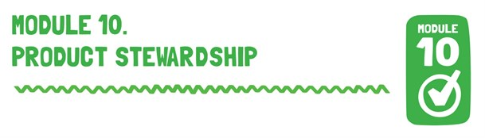

Lesson Objective
In this module students are encouraged to develop the value of personal contribution to the community and take an active part in making a difference to that community. Within the module the term product stewardship is introduced and the importance of looking after, nurturing and taking responsibility for the environment is explored. The module presents the essential knowledge required for learning about sustainability.
Australian Curriculum Content Description
| YEAR 5 GEOGRAPHY |
YEAR 6 GEOGRAPHY: |
- Reflect on their learning to propose individual and collective action in response to a contemporary geographical challenge and describe the expected effects of their proposal on different groups of people (ACHGS039)
|
- Reflect on their learning to propose individual and collective action in response to a contemporary geographical challenge and describe the expected effects of their proposal on different groups of people (ACHGS046)
|
| YEAR 9 GEOGRAPHY |
YEAR 10 GEOGRAPHY |
- The effects of the production and consumption of goods on places and environments throughout the world and including a country from North-East Asia
(ACHGK068) |
- The environmental worldviews of people and their implications for environmental management (ACHGK071)
|
| YEAR 5 SCIENCE |
YEAR 6 SCIENCE |
- Scientific knowledge is used to inform personal and community decisions (ACSHE217)
|
- Scientific knowledge is used to inform personal and community decisions (ACSHE217)
|
| YEAR 5 & 6 TECHNOLOGY AND DESIGN |
YEAR 9 & 10 DESIGN AND TECHNOLOGY |
- Investigate characteristics and properties of a range of materials, systems, components, tools and equipment and evaluate the impact of their use (ACTDEK023)
|
- Critically analyse factors, including social, ethical and sustainability considerations, that impact on designed solutions for global preferred futures and the complex design and production processes involved (ACTDEK040)
- Explain how products, services and environments evolve with consideration of preferred futures and the impact of emerging technologies on design decisions (ACTDEK041)
|
Lesson Outline
1.Introduce the term product stewardship (see Fact Sheet: Product Stewardship) which simply means looking after something. Older students could look at the Product Stewardship Act (see Support Material) and research the legislation, regulation and voluntary arrangements.
2. Students participate in a teacher-guided discussion covering the following question:
a. How can we help care for the environment?
b. What do you think might happen to the world and in the world if people were more careful with their resources?
c. Why is product stewardship important?
3. Research and Reflection. Divide the students into small groups and assign each group a product stewardship program which they need to research. Some examples of product stewardship programs in Australia include:
a. Australian Packaging Covenant
b. Batteryback
c. Aldi Battery Recycling
d. Container Deposit Scheme in South Australia
f. DropZone
g. drumMUSTER
h. FluoroCycle
i. TechCollect
j. Packaging Stewardship Forum
4. They will need to identify the following information:
a. What products are included in the program?
b. When did the program start?
c. Who pays/ funds the program?
d. What has the program achieved? For example, number of items recycled or diverted from landfill.
e. How does the program help the environment?
5.Go!Animate is an online video presentation tool that allows students to create simple video cartoons. Create a ‘Go!Animate’ video that shows a person caring for the environment by spreading the word about recycling mobile phones and participating in MobileMuster. The aim of the exercise is for students to demonstrate how being a good steward of resources helps the environment.
6. Students can present their animation to the class. Have a group sharing activity where the students view others’ videos and ask questions about the message presented. Post your animations to the MobileMuster website.
7. Conduct a brainstorming session with students to answer the following question:
a. What can I do to make a difference and be a good steward of the products I have been given? Some possible answers:
i. I can recycle phones because it has positive consequences for the environment/people.
ii. I can hold a MobileMuster because it encourages others to become more aware of environmental issues.
iii. I can create materials to advertise the mobile muster to enhance awareness in my community.
b. Record the top 10 responses from the brainstorm to the IWB or classroom poster.
8. Share your student work and upload the presentations and animations to the MusterKids Zone on the MobileMuster website.
Resources
1. Interactive whiteboard (IWB)
2. Fact Sheet: Product Stewardship
3. Go !Animate : online video presentation tool
Support Material
Extension Activities
Ask students to draw a picture of an environment which is special to them. It may be a park, river, beach or cave. What do they like about this special environment? Describe the sounds, smells and activities that they enjoy doing at the place. Why do they think it is important to look after this special place? Do they feel a responsibility to look after the place for future generations to enjoy?
Download and print the PDF document.